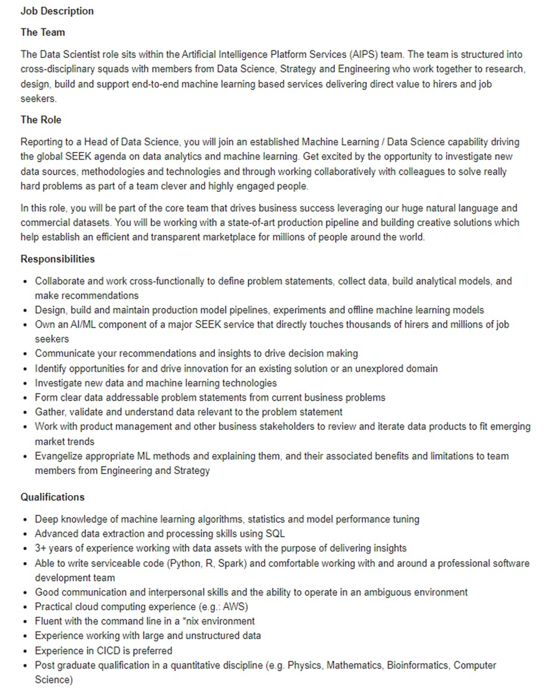

Department of Defence (2021) suggested that Defence will consider raising a data specialist career stream specifically for the Australian Defence Force. I am very interested in being part of this new venture. Unfortunately, Defence has not released any further information on the topic and I am left wondering what these positions might look like. As the ADF already employs uniformed Data Analysts, it stands to reason that a Data Scientist stream will be created to support.
This line or work interests me as I enjoy bringing order to chaos. I possess high attention to detail attributes and am used to trawling through large amounts of information to identify trends or discrepancies.
Data scientists manage, gather and analyse large amounts of data. This data is typically in a raw or unstructured state and is pulled from sources such as social media, smart devices or though Artificial Intelligence and/or Machine Learning. Maths, statistics and computer science are employed to achieve this. They analyse, process, and model data then interpret the results to create actionable plans for companies and other organisations. Data Scientists require ‘Programming skills (SAS, R, Python), statistical and mathematical skills, storytelling and data visualization, Hadoop, SQL, machine learning’ (Berkeley School of Information 2021, para. 13). Once qualified, I believe this is something I will be well suited to.
After researching many different jobs I happened upon a job advertisement for a Data Scientist with Seek (2021). If Defence goes down a similar route to the advertisement, I anticipate that I will need to achieve suitable education and work experience to be competitive.
The advertised skills, qualifications and experience required for this position include:

• Post graduate qualification in a quantitative discipline such as Physics, Math, Computer Science
• Three years work experience with data assets to produce a data strategy
• Experience working with complex data
• Experience in *nix environment
• Experience in machine learning algorithms, stats, and model performance
• Experience with writing useable code (Python, R, Spark)
• Experience with SQL data extraction and processing
• Experience in cloud computing
• Experience in continuous integration continuous delivery is preferred
• Comfortable and confident to work with and around a professional software development team
• Possess good communication skills and ability to collaborate as part of a team
• Ability to work in a dynamic work environment.
Currently I have very little practical or tangible skills, experience or knowledge required for this position. Despite my communication skills and ability to work in complex, high-pressure and dynamic work environments, I am certainly underqualified for this position. To consider myself an appropriate candidate for this position, I will need to:
• Receive a post graduate qualification in a Quantitative discipline, ideally a Master of Data Science through RMIT. To achieve this, I need to:
o Complete my Bachelor of Information Technology. (While not a prerequisite for Master of Data Science, it will provide an excellent steppingstone to start, given my limited IT knowledge and experience)
o Dedicate an additional four years part-time study to complete.
• Once graduated, seek position/s in which to complete at least three years’ work experience with a focus on gaining the required experience:
o experience working with data
o Experience with producing data strategies
o Experience with *nix environment
o Experience with machine learning algorithms, stats, and model performance
o Experience with writing code and programming
o Experience with SQL data extraction and processing
o Experience with cloud computing
o Experience with continuous integration continuous delivery is preferred.